연세리안 멸균 소독시스템
치과에서 사용하는 모든 기구들은 환자분들의 체액, 혈액 등이 직접 닿기 때문에 환자와 환자 사이에 발생할 수 있는 2차 감염에 대한 철저한 주의, 관리가 필요합니다.
노원연세리안치과는 이러한 2차 감염에 대한 예방 및 관리를 위해 WHO 국제 기준을 통과한 MD safe 감염관리 시스템 및 첨단 소독 장비를 도입하고
모든 의료진에 대한 감염 관리 교육을 통해 안전한 의료 환경을 구축하고 있습니다.
MD safe 멸균관리시스템
CDC, WHO 의 엄격한 국제 기준에 따라 철저한 감염관리가 이루어지는 감염관리 전문 프로그램 RIMS를 도입하여 안전한 의료 환경을 구축하고 있습니다.
MD safe 멸균관리시스템
CDC, WHO 의 엄격한 국제 기준에 따라 철저한 감염관리가 이루어지는 감염관리 전문 프로그램 RIMS를 도입하여 안전한 의료 환경을 구축하고 있습니다.
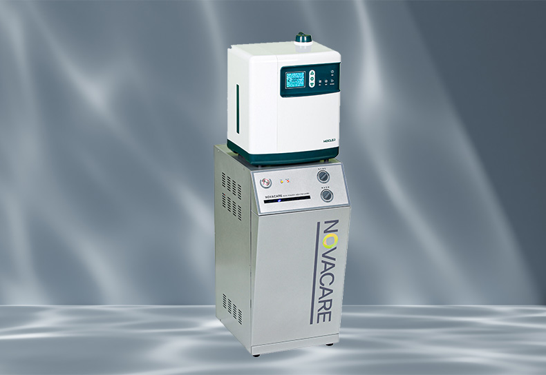
노바케어 살균수
대한민국 2% 프리미엄 전기분해 살균수 시스템 <노바케어>를 도입하여
진료 기구 및 가글용 진료수에 사용하여, 유해세균, 감염걱정 없는
안전한 물로 진료 받을 수 있습니다.
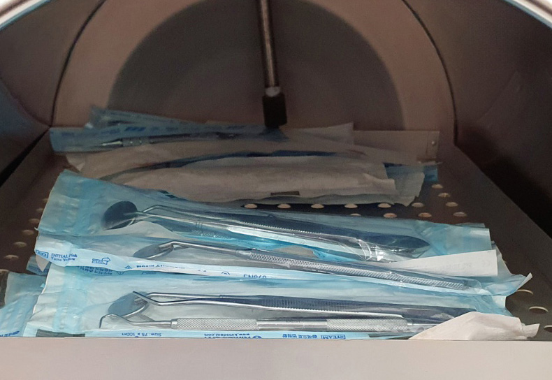
멸균기
1회 사용 후 소독한 물을 바로 배출하여 재사용 없는
직수형 멸균기를 도입하여 깨끗한 물로 고압 멸균 & 강력 건조하여
청결하고 위생적인 진료기구를 사용하고 있습니다.
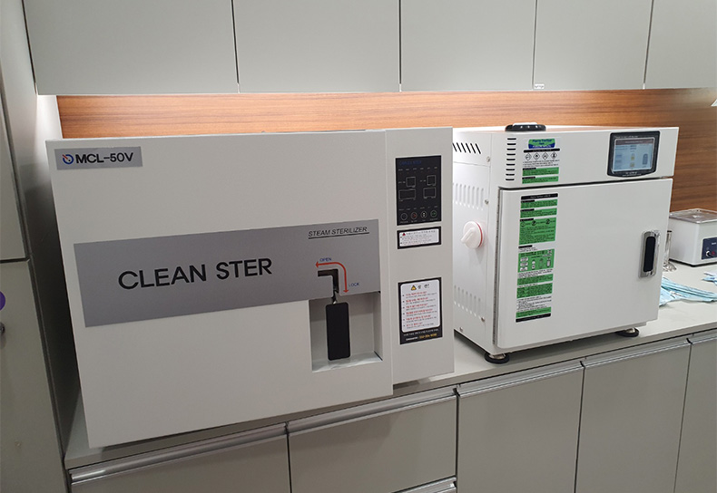
플라즈마 멸균기
저온 멸균공법으로 빠른 시간 내에 멸균하며
기구의 손상을 방지, 녹을 예방하는 프리미엄 플라즈마 멸균기를 사용하여
신속하고 청결한 기구 관리를 하고 있습니다.
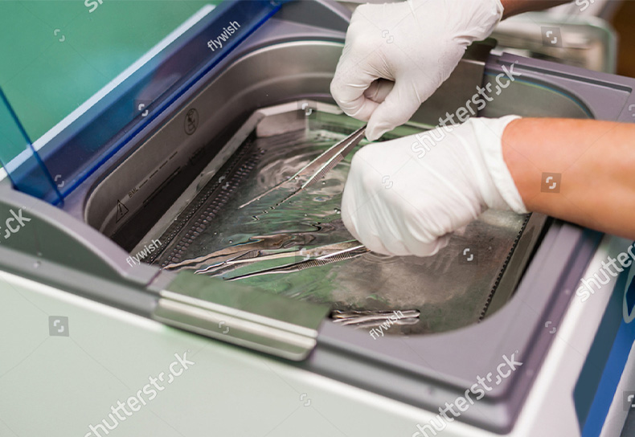
초음파 세척기
미세 오염 물질과 세균을 제거, 세척하고 소독, 살균하는 초음파 세척기를 이용하여
기구 및 보철물의 청결함을 유지합니다.
Yonseirian 12 Step Sterilization System
Yonseirian 12 Step Sterilization System
Yonseirian 12 Step Sterilization System
연세리안치과 12단계 소독 시스템
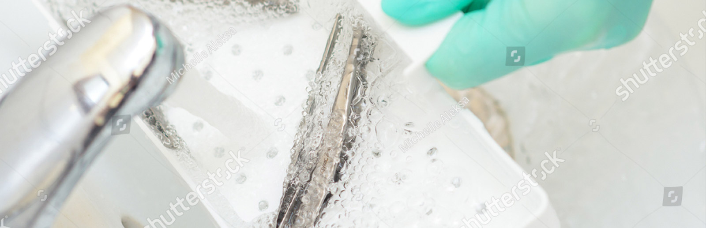
흐르는 물에 깨끗이 세척하여 오염 물질을 제거합니다.
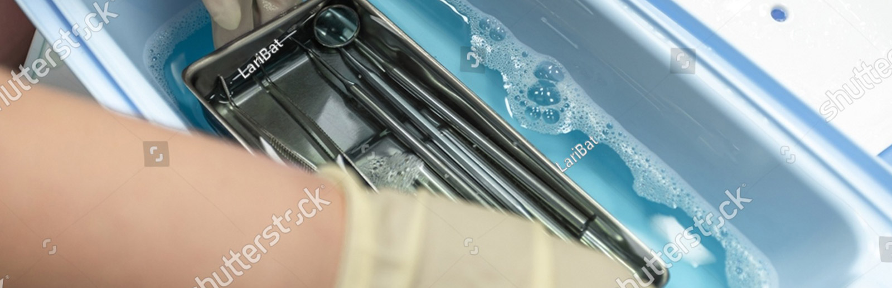
오염된 잔여 물질을 멸균 용액에 침전하여 화학적으로 분해합니다.
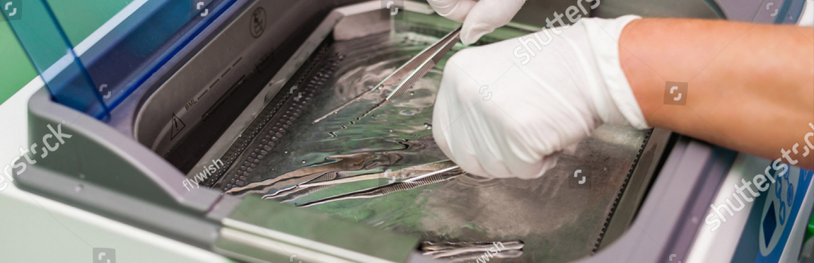
초음파 세척기를 사용하여 미세 오염원과 세균을 살균하고 재세척합니다.
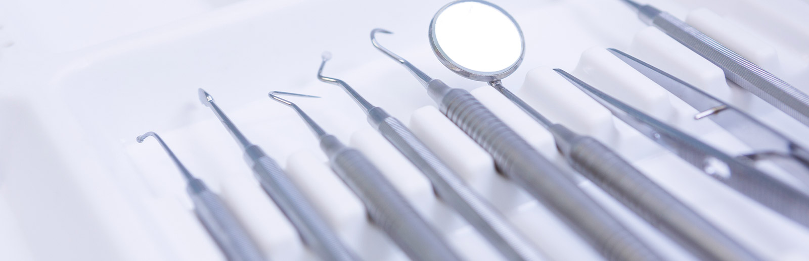
에어드라이를 사용하여 수분을 탈취, 완전 건조합니다.
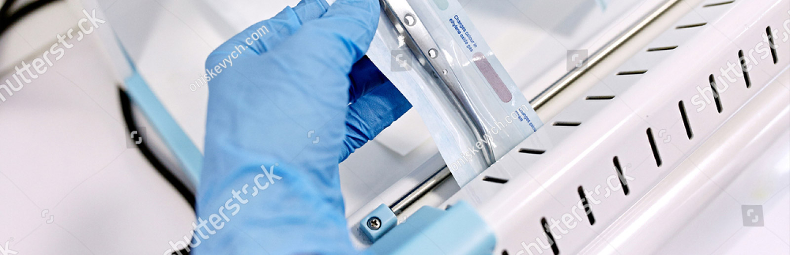
개별 환자용 기구를 하나 하나 꼼꼼하게 멸균 팩킹합니다.
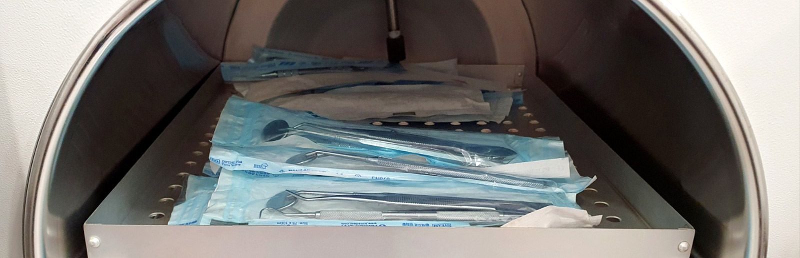
멸균 팩킹된 기구들을 재사용하지 않는 직수형 고압 멸균기를 이용하여
1시간 20분가량 고온, 고압 멸균합니다.
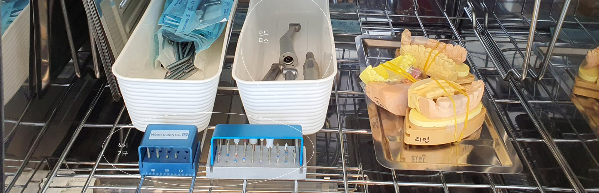
멸균 과정을 거친 개별 기구들은 살균기에 보관하여 멸균 상태를
유지합니다.
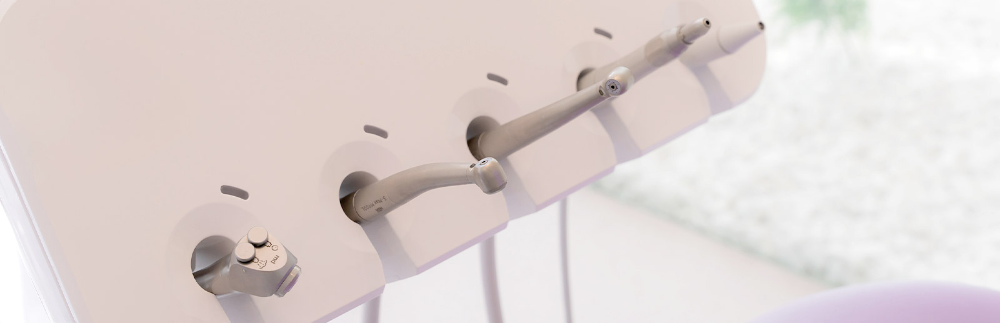
오일링 된 핸드피스 및 삭제 기구를 살균기에 보관하여 오염없이
1인 1 핸드피스를 사용합니다
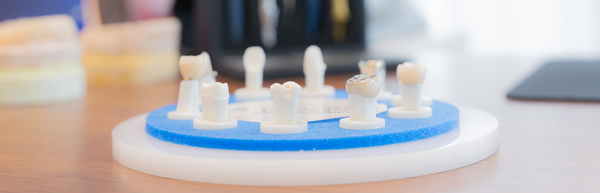
제작된 보철물은 소독하여 살균기에 보관 후, 감염, 오염원 없이
환자분에게 적용됩니다.
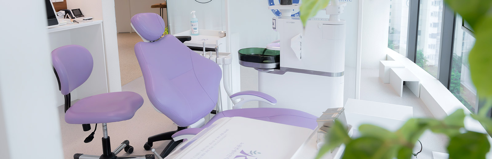
정기 모니터링을 통해 주기적을 감염 관리를 평가하며, 진료실 체어,
타구대를 소독합니다.
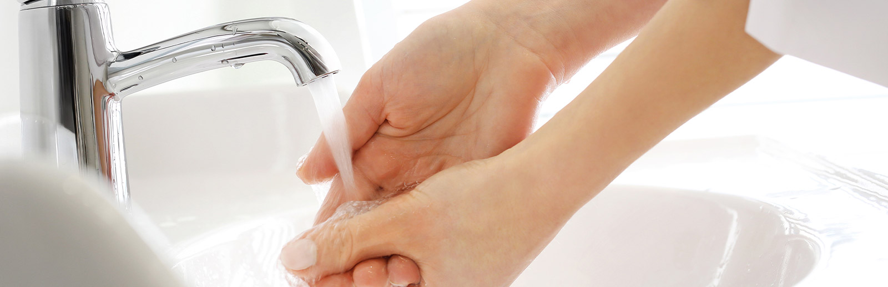
연세리안치과의 모든 의료진은 손을 깨끗이 씻고, 마스크와 페이스 쉴드를
착용하여 청결한 상태로 진료에 임합니다.
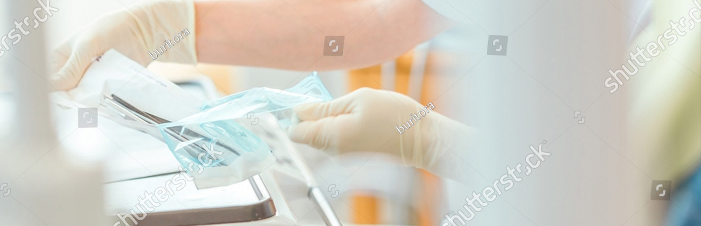
개별 멸균, 포장되고 안전하게 보관된 진료 기구는 진료 시작 시
환자분 앞에서 개봉합니다.